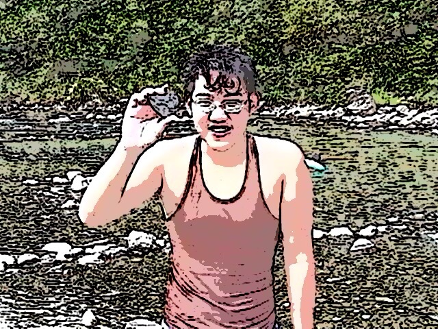
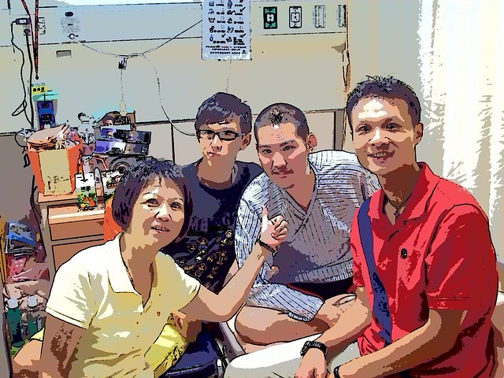
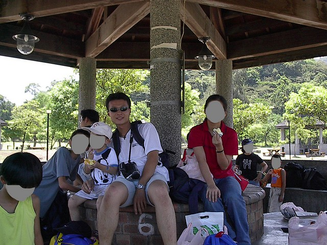

|
「喂，你好，我是H的媽媽，請問X月X日可以抽空來參加他的告別式嗎？」電話那頭悲傷的聲音傳來幾許淒涼，不禁感傷起年少的H為何如此苦命......
H是個從小在育幼機構長大的孩子，在我到職時已是將屆18歲的青少年，也是院裏所有孩子中最大的一個，因此自然而然地成為領袖，H的身世和其他孩子一樣，都有坎坷，年幼時被棄養，安置入機構，後來社工員輾轉訪出父親的下落，據說是桃園地區的黑道人士，但所知訊息僅止於此，誰也不曾真正見過；母親則是下落不明，但每隔幾年總有一位中年女子到院參與志工活動，並且對H特別親切，當時H年紀還小，後來曾向工作人員提到媽媽來看過他了，但兩人的關係始終沒有直接證實，再過幾年H大一些，也就不再提。 
育幼機構有其獨特的生態，每個孩子都有自己的一頁故事，在機構工作期間，總要面對孩子們的各種問題，H的本性不壞，令人頭痛的卻是過往成長過程中，受到環境影響所遺留下來的一些觀念與不良習慣。 例如從前擔負教養責任的大人，為了管理方便，賦予大孩子可以管教和責罵小孩子的權力，H在成長過程中受到比他年長孩子的欺壓與照顧，當角色互換後，卻發現新來的大人要求的規範已經不同，大孩子對小孩子可以友愛、照顧，但不准惡意欺壓，即使H內心也知道欺壓年幼的孩子是不對的，但在情緒上還是有所不平，仿佛自己原本該有的權勢被剝奪了。 另外，在育幼機構裏，每個孩子都會為了生存而博取資源，例如大人的關注，自由的時間，以及實際的物質、、、等，彼此競爭的叢林法則在此是種無聲的規循，H的領袖位置在資源的取得上佔有優勢地位，卻沒有相對應責任付出的體悟，也許這和他懶散及依賴的習性有關，這些習性也因為照顧者不斷輪替，難以貫徹及盡心地予以導正，而較正常家庭的孩子來得嚴重。 也由於對機構照顧過度的依賴，當H年滿18歲依規定必須離院時極度不願意，以當時懶散成性的他來說，一旦離院，謀生能力必然大有問題，但超過18歲的法定成人，是無法永遠住在育幼機構內的，經過一年的緩衝期，H終究還是搬出了院外。 H離院後一開始適應不良，高職都讀不完的他，加上每天睡到日上三竿，工作當然沒有著落，過不久就活像個遊民般，落魄度日，幾次返回機構求助，數日未進食，也沒洗澡散發著異味的樣子，幾個資深的工作人員見了不免心酸，畢竟曾經照顧過的孩子多多少少有些感情，而H對機構也有些怨懟，即使知道機構對於年滿18歲的他已沒有責任，但仍有依賴心理，那種埋怨本身就是種矛盾的情結。 所幸H後來在朋友引介下進入殯葬業工作，經過一、兩年在外的生活，H終究體認到世界的現實，殯葬業這行比較特殊，但對他這種社會邊緣人來說，或許卻算是不錯的歸宿，看著人高馬大的H穿起黑西裝有模有樣的，回機構聊起近況時也比較有自信，著實令人感到欣慰。原以為這孩子總算可以好好開始他的人生，約莫兩年後，卻接到一通自稱是H媽媽的電話，告知H得了腦瘤，正住院等待開刀，當下一陣錯愕，仿佛後腦門被鐵錘敲了一下，覺得命運何以如此捉弄人？和她約了時間到醫院探望，一踏進病房見到H，兩年前那種人生將要開始的神采飛揚已然不再，取而代之的是個被腦瘤所影響，說話緩慢，微笑靦腆的大男孩，H見到我顯得非常高興，H的媽媽說先前已連絡上其他曾照顧過H的工作人員陸續來探病（機構在H工作穩定後不久解散，這又是另一個故事了），只要是過去機構的人來，H都會露出非常開心的表情，臨走前拍下這張照片給彼此留作紀念，同時在心裏為他默默祈禱。 
事隔兩個月後，再次接到H的媽媽來電，原來當時的探望，已是最後一面......告別式當天我沒去，但H的故事一直在我心底，這些年輕時工作上的經歷偶爾還是會縈繞心頭，曾經和一群境遇特殊的孩子，了解他們的生命故事，陪他們走過一段，如此種種，也影響了我自己的人生，雨夜沈思，幾張照片翻開舊時回憶，就以此短文為之誌記吧。  |